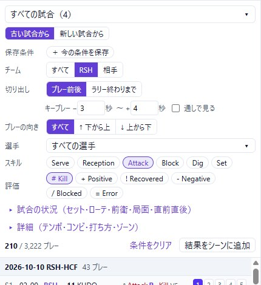

4. プレーを探す
左のプレー一覧から、見せたいプレーを絞り込みます。プレーを押すと、その場面が動画で再生されます。
プレー一覧
1 行が DVW の 1 プレーです。左から、セット、そのときの得点、チーム、背番号と選手名、ボールの向き（↑↓）、スキルと評価、アタックのコンビやゾーンが並びます。
- 行を押すと、そのプレーの少し前から再生します（決まった範囲を繰り返します）。
- ↑ ↓ で前後のプレーへ、Space で再生と一時停止、← → で少し戻る・進む、Shift + ← → で 1 フレームずつ動かせます。
- 右端の 1〜5 は、プレーをシーンに入れるボタンです（5 章）。
絞り込み

| 項目 | 使い方 |
|---|---|
| 試合 | 一番上の欄で、全試合か 1 試合かを選びます。古い試合から・新しい試合からで並び順が変わります。 |
| チーム | すべて、自チーム（対象チーム）、相手から選びます。 |
| 切り出し | クリップの長さです。プレー前後は選んだプレーの何秒前から何秒後まで（キープレー −3 〜 +4 秒など）、ラリー終わりまではラリーの最後までです。通しで見るにすると、ラリー単位でサーブから最後まで続けて流します。 |
| プレーの向き | 画面でボールが上に向かうか下に向かうかで絞ります。コートのグリッドを合わせた試合だけで使えます。 |
| 選手 | 1 人でも、何人でも選べます。 |
| スキル | Serve、Reception、Attack、Block、Dig、Set です。いくつ選んでもかまいません。 |
| 評価 | # + ! - / = の評価です。スキルを選ぶと、そのスキルでの意味（Kill、Error など）が出ます。 |
| 試合の状況 | セット、ローテーション、相手ローテ、前衛にいる選手、局面（レセプションからか切り返しか）、レセプションの評価、直前・直後のプレーで絞ります。 |
| 詳細 | テンポ、コンビ（アタックコンビとセッターコール）、打ち方、ゾーンで絞ります。 |
何も選んでいない項目は「すべて」です。下に、絞り込んだ件数と全体の件数が出ます（例：210 / 3,222 プレー）。
- 条件をクリアで、絞り込みをすべて外します。
- ＋ 今の条件を保存で、よく使う条件に名前を付けて残せます。押すとその条件に戻ります。
- 結果をシーンに追加で、絞り込んだプレーをまとめて今のシーンに入れます。
コードを直す
スカウトの入力ミス（評価や選手の間違いなど）は、アプリの中で直せます。いちばん手早いのは、プレー一覧でプレーを選んで Enter を押すことです。コードだけが 1 行で開くので、書き換えて Enter を押すと保存して次のプレーが開きます。↑ ↓ で前後のプレーへ移り（書き換えていれば保存します）、Esc で閉じます。続けて何本も直すときはこれが速いです。項目ごとに選んで直したいときや、削除・追加は、行を右クリックしてコードを直すを開き、選手・スキル・打ち方・評価・コンビ・開始ゾーン・終了ゾーン・サブゾーンを選ぶか、コードを直接書き換えて保存を押します。
- 直したプレーには、一覧に印が付きます。✎ はコード、⌖ は座標を直したプレー、＋ は足したプレーです。絞り込み、レポート、データスライド、コートの表示は、すべて直したコードで数えます。
- 直したプレーがある試合では、一覧の上に修正したプレーだけと削除したプレーも表示が出ます。見直すときは修正したプレーだけで絞れます。
- 直した内容は倉庫に保存され、スカウトファイルそのものは書き換えません。元のコードに戻すでいつでも戻せます。
- あとでスカウトファイルを差し替えて、その行のコードが変わっていたときは、直した内容は使われません。
座標（打った位置と落ちた位置）を直す
プレーの始まりの点と終わりの点も直せます。直した座標は、コートの表示（点・軌道・ヒートマップ・チャート）に使われます。
- 動画のコートの上で：プレーを選んで編集タブの◎ コートで座標を直すを押し、動画のコートの上を始まりの点から終わりの点へドラッグします。コートのグリッドを合わせた試合で使えます。今の点が緑（始まり）と赤（終わり）で出るので、点を 1 つだけドラッグして動かすか、始まりから終わりへドラッグし直します。動画は止まり、続けて何度でも直せます。Esc で終わります。
- コート図で：コードを直すのダイアログ（または編集タブのコート図で直す…）の、上から見たコートの図で同じようにドラッグします。緑の点が始まり、赤の点が終わりで、点だけをドラッグして動かすこともできます。図はそのプレーのチームの側が下です。
サーブとアタックでは、点を動かした位置のゾーンとコードのゾーンが違うと知らせが出ます。ゾーンも合わせるを押すと、コードの開始ゾーン・終了ゾーン・サブゾーンを点の位置に合わせます。ダイアログでも同じボタンが出ます。
座標を消すで点を外し、ファイルの座標に戻すで元に戻せます。レセプションとディグの線は、相手のサーブ・アタックの座標から描きます。
プレーを削除する・足す
同じダイアログのこのプレーを削除で、入力ミスで入ったプレーを外せます。確認は出ずにすぐ消え、上に出る知らせの元に戻すか Ctrl + Z で戻せます。あとから戻すときは削除したプレーも表示にすると、消したプレーが薄く出るので、その行を右クリックします。削除したプレーがシーンに入っていたときは、そのクリップは再生できなくなります。
この後にプレーを足す…では、入力し忘れたプレーをそのプレーの後に入れます。時刻は、動画の再生位置か、そのプレーの 1 秒後から始まります。今の位置で動画の再生位置を時刻にし、−1f +1f で 1 コマずつ動かせます（動画もその時刻に動きます）。
直したスカウトファイルを書き出す
ダイアログのこの試合の修正と書き出し…で、その試合の修正の一覧が開きます。1 件ずつ、またはすべてを元に戻せます。
- DVW で書き出す…：修正を入れた .dvw を、元とは別のファイルに書き出します。DataVolley で開けます。VolleyStation の .vsm から取り込んだ試合でも書き出せます。
- VSM で書き出す…：VolleyStation の .vsm から取り込んだ試合だけ使えます。修正を入れた .vsm を書き出します。
元のスカウトファイルに上書きすることはできません。